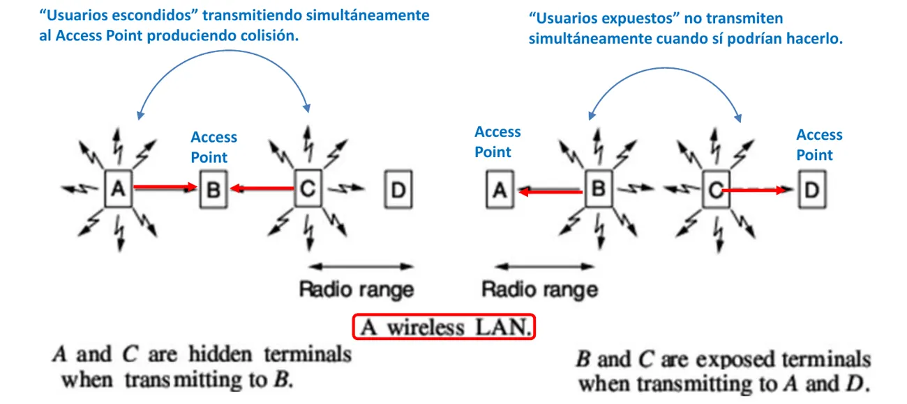
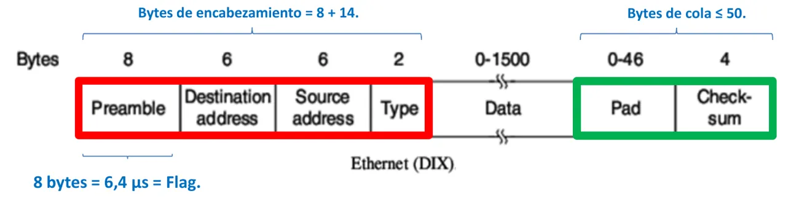
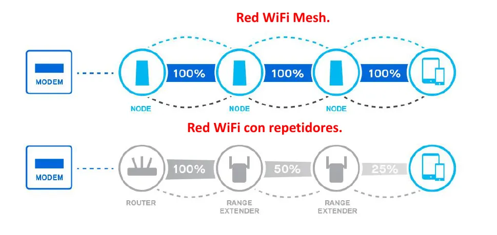
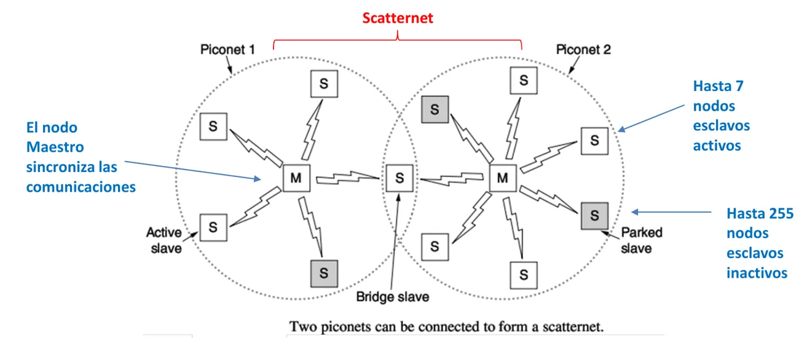

1° parcial
Modelos de capas, medios de transmisión, satélites, capa de enlace, Ethernet, WiFi, Bluetooth y RFID.
Resumen no juzgado. Todavía nadie evaluó si alcanza para estudiar solo con esto.
Cómo viene el examen
Revisé 11 hojas de 2024, 2025 y 2026. En el Drive no hay parciales de 2023. Nueve hojas son de teórico escrito, con diez consignas de un punto o con cinco de a y b. Una es de múltiple choice (28/07/2026) y una es de práctica (28/08/2024).
WiFi aparece en 7 de las 11 hojas y Ethernet, en otras 7. Son las dos partes que más conviene tener firmes.
Dos hojas preguntan capa de red
Las del 06/08/2024 (una comisión) y 28/07/2026 traen ARP, ICMP, IHL, traceroute, cuenta a infinito y etapas de congestión. Si tu comisión hace eso, estudiá también el 2° parcial.
Modelos y organismos
Servicio, primitiva y protocolo
Tres palabras que suenan parecido. Lo que las separa es entre quiénes ocurre cada cosa.
- Servicio: lo que una capa le brinda a la capa de arriba, en la misma máquina.
- Primitiva: el conjunto de operaciones que constituyen un servicio.
- Protocolo: las reglas entre las mismas capas de dos máquinas distintas.
- Arquitectura: el conjunto de capas y protocolos de una red.
Fuente: Teoría, Capa Física, Introducción a las Redes de Datos, página 6.
En criollo
Dos filósofos que no hablan el mismo idioma se comunican con traductores. El filósofo le pide al traductor (servicio). Los dos traductores se entienden entre ellos en un idioma común (protocolo). Es el ejemplo de la página 7 del apunte.
OSI y TCP/IP
OSI es de 1983 y tiene 7 capas. TCP/IP tiene 4 capas, es estándar desde 1989 y salió de la práctica. ARPANET arrancó en 1967 con conmutación de paquetes a 56 Kbps. A diferencia de la vieja red telefónica, un paquete podía tomar una ruta alternativa.
OSI es un modelo de referencia teórico y abstracto. Lo propuso la ISO como primer paso para estandarizar los protocolos, y se revisó en 1995. Cada capa tiene una función bien definida.
| Nivel | Capa | Qué hace, según el apunte |
|---|---|---|
| 1 | Física | Transmite los bits. Define qué corrientes y voltajes son un 0 y un 1, el medio (coaxil, par trenzado, fibra) y la modulación |
| 2 | Enlace, la capa Ethernet | Corta los bits en tramas y detecta errores. Coordina la velocidad del emisor con la del receptor (control de flujo). Controla el acceso cuando el canal es compartido |
| 3 | Red, la capa IP | Decide la ruta de los paquetes hasta el destino. Controla la congestión y la calidad de servicio, con retardos, tiempos de tránsito y jitter |
| 4 | Transporte, la capa TCP | Controla los errores de extremo a extremo y complementa a la capa 2. El servicio es orientado a la conexión o sin conexión, con TCP o UDP según la aplicación |
| 5 | Sesión | Establece las sesiones de los usuarios y controla el acceso de cada uno |
| 6 | Presentación | Se ocupa de la sintaxis y la semántica de los datos, y de encriptarlos. Lo controla el sistema operativo |
| 7 | Aplicación | Maneja los protocolos de las aplicaciones. Un navegador maneja HTTP, FTP, Telnet y correo |
TCP/IP nació de un requisito militar. La red tenía que soportar el corte de un canal físico sin cortar la comunicación en curso. Por eso se fue hacia la conmutación de paquetes y hacia una red que funcionara a través de varias redes. Cuando llegaron los radioenlaces terrestres y satelitales, los protocolos viejos dejaron de funcionar, y la nueva arquitectura se llamó TCP/IP.
Fuente: Teoría, Capa Física, Introducción a las Redes de Datos, páginas 8 a 13.
Tipos de redes
Según el alcance son PAN, LAN, MAN y WAN. Según cómo se conectan son punto a punto o multipunto.
| Red | Alcance | Ejemplo del apunte |
|---|---|---|
| PAN | Personal | Un smartphone y sus auriculares inalámbricos. Una PC con teclado, mouse, monitor e impresora |
| LAN | Local | La red de UTN Rosario |
| MAN | Una ciudad | La red de una empresa de telefonía o cable dentro de Rosario |
| WAN | Amplia | La red de una empresa de telefonía entre varias ciudades y países |
Fuente: Teoría, Capa Física, Introducción a las Redes de Datos, página 5.
Quién hace los estándares
| Organismo | Qué hace, según el apunte | Página |
|---|---|---|
| ITU | Regula las telecomunicaciones internacionales. Sectores T, R y D | 15 |
| ISO | Publica la mayoría de los estándares internacionales. Pasan por CD, DIS e IS | 16 |
| IETF | Resuelve rápido temas puntuales de internet. Sus RFC pasan por PS, DS e IS | 17 |
| IRTF | Donde participan los investigadores. Sale del IAB en 1989, igual que IETF | 17 |
| ICANN | Asigna las direcciones IP y los DNS | 18 |
| IEEE | Comité 802 sobre LAN. 802.3 Ethernet, 802.11 WiFi, 802.15 Bluetooth y Zigbee, 802.16 WiMAX | 19 |
Fuente: Teoría, Capa Física, Introducción a las Redes de Datos, páginas 15 a 19.
Medios guiados
Par trenzado
Dos cables paralelos forman una buena antena y captan ruido. Al trenzarlos se gana inmunidad a las interferencias. Cuanto más trenzado, mejor. El ancho de banda del par ronda 1 MHz. Un módem dial-up llega a 56 kbps en el canal de voz de 3 kHz, y ADSL supera los 13 Mbps en cables de pocos kilómetros.
| Categoría | Ancho de banda | Nota |
|---|---|---|
| 3 | 1 MHz | Telefonía |
| 5 | 100 MHz | |
| 6 | 250 MHz | Papel metálico |
| 7 | 600 MHz | |
| 8 | 40 GHz | Doble aislación |
Lo que cambia de una categoría a otra es la construcción. La 3 tiene pocas trenzas por metro y por eso es más vulnerable al ruido. La 5 tiene más trenzas por metro, y la 5e es de mejor calidad, con algo más de ancho de banda. La 6 es más gruesa y envuelve cada par en un mallado de papel metálico. La 7 sirve para Ethernet de 10 Gbps (IEEE 802.3ae). La 8 tiene doble aislación y mayor diámetro.
El ancho de banda del par depende del grosor del alambre, del largo y de la cantidad de trenzas por metro. Las telefónicas usan cables de 25, 50, 75 y 100 pares por su bajo costo.
La práctica da otros anchos de banda
La tabla de la práctica pone 16 MHz para la categoría 3 y 2000 MHz para la 8, y suma la 4 (20 MHz) y la 6a (500 MHz). La teoría dice 1 MHz y 40 GHz. Si te lo piden, aclarás de qué apunte sale el número. La práctica agrega que el cable y el conector deben ser de la misma categoría.
Fuente: Práctica, Cable Medios Guiados, página 12.
Conector RJ45. Las normas TIA 568-A y TIA 568-B arman el conector. La diferencia es que intercambian de posición los pares 2 (anaranjado) y 3 (verde). El par 1 es el azul, en los pines 4 y 5, y el par 4 es el marrón, en los pines 7 y 8.
Cable derecho o cruzado. Una PC transmite por los pines 1 y 2 y recibe por los 3 y 6. El switch y el hub lo hacen al revés. Entre dos PC iba un cable cruzado y entre una PC y un switch, uno derecho. Los switches modernos detectan solos el cableado, así que da lo mismo.
Fuente: Teoría, Capa Física, Medios Sólidos de Transmisión, páginas 4, 6 y 8.
Cable coaxil
Tiene un conductor central envuelto en un aislador, un cilindro metálico exterior y una envoltura plástica. Está mejor blindado que el par trenzado, así que llega a más velocidad y a más distancia, con un ancho de banda de hasta 1 GHz. Es más caro. Los gruesos aguantan potencias de kilovatios y se usan para transmitir radio AM y FM.
Hay dos impedancias, 50 y 75 ohms. La diferencia es de tradición más que técnica. La TV por cable usaba el de 75 y la telefonía, el de 50. Rinden parecido.
Fuente: Teoría, Capa Física, Medios Sólidos de Transmisión, página 9.
Dial-up y ADSL
Los dos usan el mismo par telefónico. El apunte da estos datos por separado, sin una comparación armada. Dial-up usa señales multinivel dentro del canal de voz de 3 kHz y llega a 56 kbps. ADSL usa hasta 1 MHz, es asimétrico y usa OFDM. Con 40 dB de relación señal a ruido, Shannon da unos 13,28 Mbps.
Fuente: Teoría, Capa Física, Fundamentos teóricos, páginas 10, 13 y 14. Capa de Enlace, Protocolos punto a punto, página 12.
Fórmulas de capacidad
Ancho de banda. El apunte lo define como el rango de frecuencias que transmite un canal. En la práctica va desde la frecuencia de potencia máxima hasta donde la potencia cae a la mitad. Entre esas dos frecuencias, y , el ancho de banda es . La mitad de la potencia es una atenuación de 3 dB, porque el decibel es 10 veces el logaritmo en base 10 del cociente de potencias.
Teorema de Nyquist
En 1924 un ingeniero de AT&T, Henry Nyquist, probó que una señal con ancho de banda “B” puede ser reconstruida tomando (2*B) muestras por segundo, de esa señal (teorema de Nyquist, o teorema del muestreo). O expresado de otro modo, si la señal tiene V niveles distintos, un canal de datos sin ruido tiene una máxima velocidad teórica dada por:
Donde B es el ancho de banda del canal y V es la cantidad de niveles discretos diferentes que tiene la señal (niveles de voltaje).
Teoría, Capa Física, Fundamentos teóricos, página 10
Canal de voz telefónico
Con un ancho de banda de unos 3 kHz no se transmiten bits a más de 6 kbps. Con 8 niveles da kbps. Con 64 niveles, 36 kbps. Con 512 niveles, 54 kbps. Es la técnica de los viejos módems dial-up, que llegaban a 56 kbps con señales multinivel.
Teoría, Capa Física, Fundamentos teóricos, página 10
Teorema de Shannon
En 1948, Claude Shannon extendió el trabajo de Nyquist para un canal con ruido eléctrico aleatorio: “La velocidad máxima depende sólo del ancho de banda y de la potencia de transmisión”.
Donde B es el ancho de banda del canal, S es la potencia de la señal y N es la potencia de ruido eléctrico presente en el canal. S/N es la relación señal a ruido (SNR), que normalmente se expresa en decibeles. A la velocidad máxima de un canal se le denomina también capacidad del canal.
Teoría, Capa Física, Fundamentos teóricos, página 13
Pasar los dB a veces antes de usar Shannon
La fórmula usa S/N en veces. Si viene en decibeles, primero . Es la conversión que hace la calculadora de abajo. El apunte no trae la demostración de ninguno de los dos teoremas.
Hz y bps no son lo mismo
El ancho de banda es un rango de frecuencias y se mide en Hz. La tasa de bits se mide en bps. En el habla diaria se mezclan.
Sirve para chequear un resultado. En el examen va el desarrollo que pide la cátedra.
Fuente: Teoría, Capa Física, Fundamentos teóricos, páginas 3, 9, 10 y 13.
Fibra óptica
La luz viaja por el núcleo (core) y rebota en el revestimiento (cladding).
Estructura física. El núcleo es de vidrio delgadísimo y transparente, aunque hay fibras modernas de plástico. Lo recubre otra capa de vidrio, el cladding, del diámetro de un cabello (125 μm). Su índice de refracción es menor que el del núcleo, y por eso el rayo no se escapa. Encima va una capa fina de plástico opaco (coating), en general una cobertura de kevlar que da resistencia mecánica y una capa exterior de plástico (outer jacket).
Conexión. Las fibras se unen de tres maneras:
- Conectores: se pierde un 10% o 20% de la luz, pero facilitan conectar y reconectar.
- Splitters: un mismo rayo se divide por dos o más caminos.
- Soldadura: dos fibras se fusionan en una sola, con una atenuación chica en la unión.
| Multimodo | Monomodo | |
|---|---|---|
| Diámetro del núcleo | Unos 60 μm | 8 a 10 μm |
| La luz | Rebota y se dispersa un poco | Va en línea recta |
| Alcance | Pocos kilómetros | 100 km sin amplificar, 500 Gbps hoy |
La luz visible va de 400 a 700 nm. Se usa luz infrarroja porque ahí la atenuación es menor, menos de 1 dB/km. Las ventanas se centran en 850, 1300 y 1550 nm. Las dos últimas atenúan apenas un 5% por km y se usan para largas distancias. El LED sirve para distancias cortas y el láser, más caro, para largas. Los fotodiodos del receptor son los elementos más lentos, y son los que limitan la velocidad. El máximo de la fibra ronda 50 Tbps.
Como anchos de banda de referencia, el apunte da 1 MHz para el par trenzado, 1 GHz para el coaxil y 50 Tbps para la fibra.
| Fibra frente al coaxil | |
|---|---|
| Ventajas | Más ancho de banda. Repetidor cada 50 km contra 5 km. Sin interferencia. Sin problema con corrosivos. 80 veces menos peso |
| Desventajas | Transmisor y receptor caros. Poco flexible. Técnico capacitado. No lleva potencia eléctrica |
Fuente: Teoría, Capa Física, Medios Sólidos de Transmisión, páginas 4, 9, 13, 14, 15 y 18.
Tasa de bits y velocidad de propagación
La tasa de bits es cuánto entra por segundo. La propagación es cuánto tarda en llegar. Las dos cosas son independientes. Un camión con discos de 100 TB que tarda 24 horas equivale a 9,25 Gbps, con una tasa altísima y un retardo enorme. Las ondas viajan a unos 300.000 km/s en el vacío y a unos 2/3 de eso en cobre y fibra.
Fuente: Teoría, Capa Física, Medios Sólidos de Transmisión, página 3. Transmisión Inalámbrica, página 4.
Transmisión inalámbrica
La frecuencia y la longitud de onda se relacionan por . Hasta la luz visible, las ondas no son ionizantes y su único efecto es el calentamiento. Por eso se limita la potencia. Arriba de la luz visible ionizan las moléculas y provocan cáncer, como la ultravioleta y los rayos X. Un celular emite como máximo 0,6 W.
No ionizar quiere decir no poder separar las moléculas del cuerpo en iones. Por eso esas ondas son casi inofensivas. Entre las ionizantes, en una radiografía la exposición a los rayos X dura pocos milisegundos. Las más nocivas son las ondas radiactivas, de la fisión nuclear, que tienen las frecuencias más altas que se conocen. Se clasifican en alfa, beta y gamma.
El celular frente a la antena. La antena de telefonía transmite más potencia, hasta 50 W. Pero la mayor parte de la radiación que absorbemos viene del celular, porque al hablar está pegado a la cabeza. Por eso su potencia está limitada a 0,6 W.
- El celular baja solo su potencia cuando está cerca de una antena, porque la antena le informa la intensidad con que lo recibe. Conviene hablar cerca de la estación base o al aire libre.
- Guardado en un bolsillo o una cartera, la señal se atenúa y el celular sube su potencia.
- En los chicos la radiación penetra mucho más en la cabeza, porque el cráneo es más delgado.
Fuente: Teoría, Capa Física, Transmisión Inalámbrica, páginas 10 a 12.
| Frecuencia | Comportamiento | Ejemplos |
|---|---|---|
| Bajas, menos de 10 MHz | Siguen la curvatura de la Tierra, atraviesan edificios, más de 300 km | Radio AM, de 530 a 1300 kHz |
| Intermedias, unos 50 MHz | Se refractan en la ionósfera | Radioaficionados |
| Altas, desde 100 MHz | Van en línea recta. Rebotan en obstáculos y se atenúan mucho al cruzar edificios | Radio FM, radares, celulares, WiFi |
La diferencia de fondo entre AM y FM es qué propiedad de la portadora cambia. Modulación es modificar una propiedad de una onda periódica, la portadora (carrier), para transmitir un mensaje. Así se desplaza el espectro de frecuencias del mensaje.
- AM, modulación de amplitud: la amplitud de la onda del mensaje se conserva en la portadora para enviar la información.
- FM, modulación en frecuencia: la amplitud del mensaje es proporcional a la frecuencia de la portadora. La información va en la frecuencia de la onda modulada.
Fuente: Teoría, Capa Física, Transmisión Inalámbrica, páginas 4, 5, 7 y 10 a 11. Modulación, Codificación y Multiplexación, páginas 3 y 4.
Bandas ISM. La ITU-R asigna las bandas para TV, radio, celulares y microondas en todo el mundo. En cada país lo hace su autoridad, en Argentina el ENACOM, y las licencias se compran. Casi todos los países dejan además bandas sin asignar, de uso público y con potencia muy limitada. Son las ISM (Industrial, Scientific and Medical). Ahí funcionan portones, mouses y teclados inalámbricos, juguetes a control remoto, WiFi y Bluetooth. La banda de 900 MHz ya está superpoblada, por eso los routers usan 2,4 y 5 GHz.
Infrarrojo. Se usa en controles remotos, aires acondicionados y en las cámaras de los celulares para medir distancia y luz. Como la luz visible, no atraviesa objetos opacos y va en línea recta. Las frecuencias de los aparatos domésticos no están reglamentadas. La fibra óptica también usa infrarrojo, porque ahí atenúa menos.
Fuente: Teoría, Capa Física, Transmisión Inalámbrica, páginas 9 y 13.
Satélites
Vale aprenderlo como tabla. Piden altura, cantidad de satélites y ejemplos de servicio.
Los cinturones de Van Allen separan tres zonas. Kepler dice que el período crece con el radio según .
Errata del apunte
La hoja imprime , pero en la misma oración dice «a mayor radio, mayor período de giro». Con el radio dividiendo, el período bajaría. Acá va multiplicando, que es lo que dice el texto. Teoría, Capa Física, Comunicaciones por satélites, página 4.
Geoestacionario quiere decir que el satélite parece quieto visto desde la Tierra, porque gira a la misma velocidad angular que el planeta. La gran ventaja es que las antenas en tierra no se mueven para apuntarle. La idea fue de Arthur Clarke en 1945, que también calculó la altura, unos 35.800 km.
| Órbita | Altura | Datos | Ejemplos |
|---|---|---|---|
| GEO | 35.800 km | 2° de separación, 180 satélites, hasta 5000 kg. Consumen varios kilovatios, que dan los paneles solares. Llevan combustible para ajustar la posición durante unos 10 años. Gran pisada, apta para punto a multipunto. Retardo de 540 ms ida y vuelta | DirecTV |
| MEO | 20.200 km | Vuelta en 6 horas. Pisada menor, menos potencia y menos retardo | GPS, unos 30 satélites. Galileo |
| LEO | Los ejemplos van de 500 a 1440 km | Se mueven rápido, así que hacen falta muchos para cubrir la Tierra. Menor retardo, menos potencia en las estaciones terrestres y lanzamiento más barato | Iridium, 66 satélites a 750 km en 6 órbitas polares de 11, con la comunicación de satélite en satélite. Globalstar, 48 a 1440 km. Starlink, más de 3000 a unos 500 km |
Cada satélite lleva transponders de 36 MHz que amplifican la señal recibida y la reenvían en otra frecuencia. Eso se llama bent pipe. La pisada (footprint) es la zona de la Tierra que cubre el haz. Se usan las bandas C, L, S, Ku y Ka. Ku y Ka sufren con la lluvia.
- Bandas. La ITU coordina las posiciones y las bandas. La C fue la primera. La L y la S se sumaron en 2000 y ya están saturadas. Contra la lluvia en Ku y Ka se pone una segunda antena terrestre lejos de la primera, porque es muy improbable que llueva en los dos lugares a la vez.
- VSAT. Microsatélites baratos, de antenas muy direccionales, 1 W y varios Mbps, que se usan para televisión satelital. Como tienen poca potencia, suelen pasar por una antena terrestre de gran ganancia (HUB). La desventaja es el retardo de la doble retransmisión, cerca de 1 s ida y vuelta.
- Globalstar usa bent pipe. La comunicación baja a tierra y no viaja entre satélites. La electrónica compleja queda en tierra, y los teléfonos transmiten con menos potencia.
Ventajas frente a las redes terrestres. Siguen funcionando en desastres naturales, como el tsunami de 2004. Son más baratas en lugares difíciles o poco poblados, como los polos, los desiertos o un archipiélago. Y son lo más adecuado para mandar el mismo mensaje a muchos usuarios a la vez, como hace DirecTV.
Fuente: Teoría, Capa Física, Comunicaciones por satélites, páginas 4, 5, 7, 8 y 9 a 13.
Modulación y codificación
El apunte de este tema figura como opcional. Lo usan después Ethernet, Fast Ethernet y la separación en tramas.
Bandabase y pasabanda. Si el mensaje se transmite sin modular, la transmisión es bandabase y sus frecuencias no cambian. Es común en cables. En el aire siempre se modula. Se suben a propósito las frecuencias para que las antenas sean más chicas y sencillas, y la señal queda pasabanda.
Modulación digital es convertir bits en señales analógicas que los representen.
| Técnica | Qué cambia según el bit |
|---|---|
| ASK | La amplitud de la portadora |
| FSK | La frecuencia |
| PSK | La fase |
| QPSK | La fase, con 4 fases (45°, 135°, 225° y 315°). Cada fase lleva 2 bits |
| QAM | La amplitud y la fase. QAM-16 lleva 4 bits por símbolo y QAM-64, 6 bits |
Codificación es la forma de los pulsos que representan los bits. Busca usar bien el ancho de banda, recuperar el reloj de sincronismo y balancear la corriente continua.
| Código | Cómo representa los bits | Dónde y qué tiene |
|---|---|---|
| NRZ | Voltaje positivo para el 1 y negativo para el 0 | Con muchos 1 o muchos 0 seguidos cuesta ver dónde empieza cada bit |
| NRZI | Invierte la señal cuando llega un 1 y no la invierte con un 0 | Puerto USB |
| Manchester | Cada símbolo tiene un cambio de polaridad | Ethernet clásica. Recupera bien el reloj pero necesita el doble de ancho de banda que NRZ |
| AMI o bipolar | Los 1 alternan entre positivo y negativo | Balanceado, como Manchester |
| 4B/5B | Manda 4 bits en 5 para que no haya 3 o más 0 seguidos | Agranda un 25% el ancho de banda necesario |
- Señales multinivel. Con 8 niveles, cada símbolo lleva 3 bits. Se gana velocidad con el mismo ancho de banda, pero el receptor se complica.
- Código Gray. Los símbolos vecinos difieren en un solo bit. Así un error de símbolo es un error de un solo bit.
- Scrambling. Multiplica la señal por una secuencia pseudoaleatoria que el receptor conoce. Ayuda a recuperar el reloj y reparte la energía en un ancho de banda grande, pero lo usa con menos eficiencia.
- Balance de continua. Una señal está balanceada si tiene tantos pulsos positivos como negativos. Importa porque capacitores y transformadores atenúan la componente continua y deformarían los pulsos.
Fuente: Teoría, Capa Física, Modulación, Codificación y Multiplexación, páginas 5 a 13.
Multiplexación
Compartir un canal entre varias señales.
| Técnica | Cómo reparte | Con personas hablando |
|---|---|---|
| FDM | Una banda de frecuencia por usuario | Grupos con voces de distinta altura |
| TDM | Todo el ancho de banda durante un time slot | Hablan de a uno |
| CDM | Todos a la vez, cada uno con su código | Todos juntos en idiomas distintos |
OFDM reparte en subportadoras superpuestas pero ortogonales, y se usa en WiFi y 4G.
Fuente: Teoría, Capa Física, Modulación, Codificación y Multiplexación, páginas 14, 15, 16 y 18.
Capa de enlace
Los tres servicios
| Servicio | Cómo funciona | Ejemplo del apunte |
|---|---|---|
| Orientado a la conexión | Tres fases, establecimiento, datos y desconexión | Satélite, telefonía de larga distancia |
| Sin conexión | Best effort, sin control ni retransmisión | Ethernet |
| Sin conexión, con confirmación | Numera las tramas y confirma cada una. Si no llega, la reenvía | WiFi |
Cuándo conviene cada uno, según el apunte:
- Orientado a la conexión: en canales muy largos y poco confiables, como el satélite. En el establecimiento se inicializan los contadores de tramas y se mide la tasa de error para decidir si se puede comunicar. Al final, la desconexión se coordina desde los dos lados.
- Sin conexión: en canales muy confiables, con casi ningún error, o en streaming en tiempo real, como videoconferencia o VoIP. Ahí no tiene sentido retransmitir un píxel o un instante de voz perdido. Ethernet no tiene confirmación de ninguna recepción. Si una trama se pierde, la capa 2 ni lo detecta y lo resuelven las capas de arriba. En tiempo real es preferible recibir un dato malo que un dato tardío.
- Sin conexión, con confirmación de recepción: en canales inalámbricos, donde siempre hay interferencias. El apunte usa esa frase para WiFi. Cada trama lleva un número, el receptor confirma su llegada y, si no llega en un tiempo prudencial, se reenvía.
Fuente: Teoría, Capa de Enlace, Control de Flujo, páginas 4 a 7.
Trama, encabezamiento y cola. La trama (frame) es una cadena de bits de longitud fija que forma una unidad de datos en la capa de enlace. El encabezamiento (header) va al principio y sirve para reconocer dónde empieza una trama nueva. También lleva las direcciones de origen y destino. Los bits de cola (trailer) van al final, sobre todo para el control de errores. Emisor y receptor tienen que usar el mismo protocolo de capa 2, como Ethernet, WiFi o PPP.
Fuente: Teoría, Capa de Enlace, Control de Flujo, página 3.
Dónde empieza una trama
| Método | Cómo funciona | Dónde se usa |
|---|---|---|
| Contar bytes | Un campo dice cuántos bytes siguen | Ya no se usa |
| Flag y byte-stuffing | Byte especial de inicio. Si aparece en los datos, se antepone un byte ESC | PPP |
| Flag y bit-stuffing | Flag 01111110. Después de un cero y cinco unos seguidos, se agrega un 0 | HDLC, USB |
| Violar la codificación | Se usan símbolos que no representan datos, como en 4B/5B | FDDI, Fast Ethernet |
| Combinar flag y largo | Un flag de comienzo y, además, un campo del encabezamiento con la longitud de la trama | Ethernet clásica, WiFi |
- Por qué no se cuentan bytes. Si llega un error en el encabezamiento, no se sabe el largo real de la trama y se pierde el sincronismo. Volver a sincronizar tampoco es sencillo.
- Violar la codificación. En 4B/5B hay palabras de 5 bits que no representan ningún dato, como 11000-10001. Una de ellas marca el comienzo y el fin de la trama.
- Combinar. Es una técnica con redundancia, por seguridad. El flag suele ser largo, 72 bits en WiFi, para que el receptor tenga tiempo de prepararse.
Fuente: Teoría, Capa de Enlace, Control de Flujo, páginas 8 a 11.
Control de flujo y ventana deslizante
Sirve para que el emisor rápido no ahogue al receptor lento. Lo usual es tener un feedback del receptor. Si no llega en un tiempo prudencial, el emisor retransmite. Para que el receptor no tome la repetida como una trama nueva, las tramas se numeran con un número de secuencia.
Hay dos métodos para regular el flujo:
- Por ventana deslizante: se usa en capa 2 y también en capas superiores. El receptor avisa si el emisor puede seguir mandando o tiene que frenar. Se mantiene una ventana de X tramas entre la que se envía y la que se va recibiendo.
- Por velocidad: lo usa TCP en capa 4.
Las variantes de la ventana deslizante:
- Stop and wait: ventana de 1, llamada 1-bit Sliding Window. Manda una trama y espera la confirmación. Usa temporizador y número de secuencia, para que el receptor note una repetida. Es lo que usa WiFi.
- Piggybacking: la confirmación viaja dentro de otro mensaje de vuelta.
- Go Back N: el emisor manda N tramas mientras espera la confirmación de la primera. Ante un error, repite desde esa trama en adelante. El receptor descarta las que llegan fuera de orden, porque su ventana es de tamaño 1. Es mejor que stop and wait con retardos grandes.
- Selective Repeat: el receptor guarda las tramas que llegan bien aunque estén fuera de orden, y el emisor repite solo la que falló. Usa mejor el canal, pero el receptor necesita bastante memoria. La confirmación es acumulativa. Si faltaba la 2 y ya tenía la 3, la 4 y la 5, al llegar la 2 confirma solo la 5, y el emisor da por recibidas la 3 y la 4.
En criollo
Stop and wait es mandar un mensaje y no escribir otro hasta que te clavan el visto. Con ventana deslizante mandás varios de corrido, hasta un tope, y el visto de cada uno te habilita el siguiente. Si la otra persona tarda mucho en contestar, conviene un tope grande.
Con mucho retardo de ida y vuelta, como en un enlace satelital, esperar cada confirmación desperdicia el canal. Por eso ahí la ventana suele ser grande. En WiFi una ventana más grande sumaría complejidad sin mejorar.
¿Cómo tiene que ser el contador de secuencia respecto de la ventana?1° parcial 28/07/2026, recuerdo de alumno
El contador tiene que ser el doble de la ventana, para que no se dupliquen tramas. Con ventana 7 debe contar hasta 14. Así el receptor no confunde una retransmisión con tramas nuevas si se pierden las confirmaciones.
Fuente: Teoría, Capa de Enlace, Control de Flujo, página 17.
Ejemplo del apunte: con un satélite de 0,5 s, 50 kbps y tramas de 1000 bits, la ventana da 26 tramas.
Sirve para chequear un resultado. En el examen va el desarrollo que pide la cátedra.
Fuente: Teoría, Capa de Enlace, Control de Flujo, páginas 12 a 19. Capa de Transporte, Características, página 10.
Detección de errores
CRC divide el bloque por un polinomio generador. Un polinomio de bits detecta todas las ráfagas de hasta bits. CRC32 es el de IEEE 802. Con una distancia de Hamming se detectan errores y se corrigen .
El apunte de este tema figura como opcional, pero la guía de problemas de capa de enlace de la cátedra trae paridad, Hamming, checksum y CRC.
Dos estrategias. Las dos agregan bits redundantes, los códigos de control de errores.
- Detectar: agrega los bits mínimos para saber que hubo un error, sin saber cuál. El receptor decide si pide la retransmisión. Se usa en canales muy confiables, como el cable o la fibra, en las capas de enlace, red y transporte.
- Corregir: agrega más bits para corregir sin retransmitir. Se llama FEC (Forward Error Correction). Se usa en canales ruidosos, como los inalámbricos, en las capas más bajas.
Ningún método salva del todo, porque los bits de control también pueden llegar con errores.
Fuentes de error. El ruido térmico es aleatorio y da bits erróneos aislados. Cubre todo el espectro y es proporcional al ancho de banda. Las interferencias no aleatorias, como las chispas de un motor o un interruptor, dan errores en ráfaga. La fibra se salva de estas últimas.
Palabras del código. Tienen bits, con bits de datos y de control. Los códigos del apunte son de bloque, sistemáticos y lineales.
| Método | Cómo funciona | Qué detecta |
|---|---|---|
| Bit de paridad | Suma en módulo 2 de los datos | Errores de 1 bit. Dos errores pasan inadvertidos |
| Interleaving | Una matriz con un bit de paridad por columna | Mejor para ráfagas, porque varias columnas marcan el error |
| Checksum de IP | Suma aritmética de 16 bits | Un 1 y un 0 que cambian de lugar. No ve ceros faltantes ni dos mensajes mezclados |
| Fletcher | Suma el producto de cada dato por su posición | Agrega información de la posición |
| CRC | División por un polinomio generador que conocen los dos lados | Ráfagas de largo menor o igual a |
Los pasos del CRC, según el apunte:
- Agregar al final de los bits tantos ceros como el grado del polinomio generador.
- Dividir por los coeficientes de , restando sucesivas veces en módulo 2.
- Restar el resto de la división al total de los bits, en módulo 2 (OR exclusiva).
El ejemplo del apunte calcula el CRC de 1101011111 con , agregando 4 ceros.
Por qué detecta. Se transmite , divisible por , y se recibe . Al dividir queda solo . Cada 1 de es un bit erróneo. Si tiene 2 o más términos, no divide a un error simple sin resto, y lo detecta. CRC32 detecta ráfagas de hasta 32 bits, toda ráfaga que afecte un número impar de bits y hasta 3 errores aislados. Se arma en hardware con registros de desplazamiento, como en Ethernet, WiFi y PPP.
Corrección. El code rate es , la parte de información sobre el total. Es casi 1 en canales buenos y 0,5 o menos en los ruidosos.
- Distancia de Hamming entre dos palabras es la cantidad de bits distintos. La del código es la menor entre todas sus palabras. El ejemplo del apunte es un código (10,2) de 4 palabras con , que detecta 4 errores y corrige 2.
- Cota de bits de control. Para corregir errores de 1 bit, cada palabra tiene vecinas ilegales a distancia 1. Como hay palabras y combinaciones posibles, hace falta . Con queda .
- El código de Hamming pone los bits de control en las posiciones potencia de 2 (1, 2, 4, 8…), numerando de izquierda a derecha. Cada bit de control es la paridad de las posiciones que lo incluyen en binario. El receptor repite la cuenta y arma el síndrome, que da la posición del bit erróneo. El ejemplo del apunte codifica la A (1000001) con el (11,7).
- El (15,11) es más eficiente que el (11,7). Los dos agregan 4 bits de control, pero y .
Fuente: Teoría, Capa de Enlace, Control de Errores, páginas 3 a 14.
Subcapa MAC
| Tipo | Protocolos | Cómo rinde |
|---|---|---|
| Asignación estática | FDM, TDM | Fija. Rinde mal si unos usuarios tienen poco tráfico y otros, mucho |
| Acceso aleatorio | ALOHA, CSMA | Mejor con tráfico muy bajo, porque agrega menos bits |
| Acceso controlado | Bit-Map, Token, Binary Countdown | Mejor con mucho tráfico, porque evita las colisiones |
Los protocolos de acceso controlado, sin colisiones:
- Bit-Map: cada usuario tiene un slot de 1 bit y pone un 1 si tiene una trama lista. Después transmiten de a uno, en orden. Si transmite uno solo, la eficiencia es aproximadamente datos / (datos + N). Si transmiten todos, datos / (datos + 1). Cuanto más larga la trama, mejor.
- Token Passing: los usuarios forman un anillo y el token pasa de uno en uno. El que lo tiene manda una trama y lo pasa. El receptor saca el mensaje del anillo para que no gire para siempre. Rinde igual que Bit-Map. Ejemplos son Token Ring de IBM (1980), FDDI para fibra (1990) y RPR, IEEE 802.17 (2000).
- Binary Countdown: Bit-Map y Token necesitan un slot por usuario y no sirven con miles. Acá cada estación manda su dirección en binario y gana la de número más alto, con una OR entre las direcciones. Con 10 bits entran 1024 usuarios sin colisiones. El precio es que no todas tienen la misma chance. La eficiencia es , con los datos y los usuarios.
Los protocolos de disputa limitada combinan las dos familias y aceptan algunas colisiones. Agrupan usuarios con un slot por grupo, así las colisiones quedan dentro de cada grupo, y la cantidad de slots crece con los usuarios y el tráfico. El ejemplo es el árbol adaptable (Adaptive Tree Walk). Arranca con un slot. Si hay colisión, los usuarios se dividen en dos grupos con un slot cada uno, y así sigue. Con poco tráfico queda un único slot, y con mucho los slots se acercan a la cantidad de usuarios.
Fuente: Teoría, Capa de Enlace, Subcapa MAC, páginas 3, 4 y 11 a 15.
ALOHA y CSMA
| Protocolo | Cómo actúa | Rendimiento máximo |
|---|---|---|
| ALOHA puro | Transmite cuando quiere | , 18% con |
| ALOHA ranurado | Transmite solo al inicio de un slot | , 36% con |
| CSMA | Escucha antes de transmitir | Mejor que ALOHA |
De dónde salen los porcentajes. ALOHA nació en Hawaii en 1970, para unir las islas por radio en una misma frecuencia. En ALOHA puro la computadora central repetía cada mensaje como confirmación. Si el usuario notaba una diferencia, esperaba un tiempo prudencial y reenviaba. La cantidad de mensajes que se generan en un tiempo de trama sigue una distribución de Poisson.
Donde es la cantidad de mensajes generados, la probabilidad de que se generen mensajes y el tráfico promedio, los mensajes esperados por tiempo de trama. El canal está libre si no se genera ningún mensaje, .
- ALOHA puro: para no chocar hace falta un tiempo libre de dos tiempos de trama. Entonces y . El máximo es 0,184 con .
- ALOHA ranurado (1972): transmitir solo al inicio del slot sincroniza a todos. Solo chocan dos que quieren el mismo tiempo de trama. Entonces y , con máximo de 36% en .
- Con las colisiones crecen en forma exponencial y baja el rendimiento.
Las variantes de CSMA son 1-persistente, p-persistente y no persistente. WiFi usa una modificación de p-persistente.
- 1-persistente: si el canal está vacío transmite enseguida. Si choca, espera un tiempo aleatorio. Es como ALOHA, pero escuchando.
- p-persistente: si el canal está libre transmite con probabilidad .
- No persistente: si el canal está ocupado espera un tiempo aleatorio y recién después vuelve a escuchar.
CSMA puede chocar igual. El rendimiento empeora cuando crece el producto velocidad por retardo de propagación.
CSMA/CD además deja de transmitir apenas detecta una colisión. Si el retardo entre los dos usuarios más lejanos es , hay que esperar hasta para enterarse. Por eso el slot de contención vale . Se usó en la vieja Ethernet por coaxil. Igual puede haber colisiones, y cuanto más larga la trama, mejor se usa el canal.
En criollo
CSMA es una mesa con amigos: escuchás antes de hablar. CSMA/CD suma que, si dos arrancan a la vez, los dos se callan al toque y esperan un rato al azar. ALOHA es el que habla cuando quiere, sin escuchar a nadie.
Fuente: Teoría, Capa de Enlace, Subcapa MAC, páginas 5 a 10.
Terminal escondida y terminal expuesta
- Escondida: dos estaciones lejanas no se escuchan entre sí y transmiten al mismo Access Point. Hay colisión.
- Expuesta: dos estaciones se escuchan y no transmiten, aunque podrían hacerlo sin molestarse. Baja la eficiencia.

MACA intenta resolverlo con RTS y CTS.
En el aire la señal llega hasta un millón de veces más débil de lo que salió. Por eso cada usuario habla solo con el Access Point y no con los demás, a diferencia de una LAN cableada.
MACA (Multiple Access with Collision Avoidance, 1990) evita colisiones estimulando al receptor a responder con una trama chica. Así las estaciones que lo escuchan se callan. Es mejor que solo escuchar la portadora del emisor.
- A le manda a B un Request to Send (RTS).
- B responde con un Clear to Send (CTS).
- A manda el mensaje completo.
- D escucha a B y se queda en silencio. C no escucha a B pero escucha a A, y también se calla.
En WiFi este método minimiza las colisiones, pero no las elimina.
En criollo
Hablás con alguien que está en el medio de un salón. Del otro lado, alguien que no te oye le habla a la misma persona, y ella no entiende a ninguno. Es la escondida. La expuesta es al revés. Oís a otro y te callás, aunque tu oyente está lejos y no le molestaría.
Fuente: Teoría, Capa de Enlace, Subcapa MAC, páginas 17 y 18. Redes WiFi, página 14.
Ethernet
La trama
| Campo | Tamaño | Detalle |
|---|---|---|
| Preámbulo | 8 bytes | Es el flag de comienzo. Sincroniza el reloj del receptor en 6,4 μs |
| Direcciones MAC | 6 + 6 bytes | Primer bit 0 ordinaria, 1 grupo. Todos unos es broadcast. Los primeros 3 bytes son del fabricante |
| Type o Length | 2 bytes | Menos de 1500 es longitud. Más es el tipo de protocolo |
| Datos | Hasta 1500 bytes | |
| Pad | Lo que falte | Para llegar al mínimo |
| CRC | 4 bytes | CRC32. Si falla, descarta la trama |

La trama mínima es de 64 bytes, equivalentes a 51,2 μs. Ethernet no confirma ni retransmite. Lo deja a las capas superiores.
Por qué 64 bytes. Son 512 bits, 51,2 μs a 10 Mbps. Es un poco más que los 50 μs de ida y vuelta de la LAN más larga, 2500 m de coaxil con 4 repetidores. Con una trama más corta, A podría terminar de enviar antes de que su primer bit llegue a B. Si después hay una colisión, A cree que la trama llegó bien. La estación que detecta una colisión deja de transmitir y manda 48 bytes de ruido para avisarles a todas.
Fuente: Teoría, Capa de Enlace, Redes Ethernet, páginas 6 a 8.
Es CSMA/CD 1-persistente con espera exponencial. Tras una colisión, el tiempo se divide en slots de 51,2 μs. La estación espera 1 slot. Si vuelve a chocar, elige al azar entre 0 y 4 slots. A la tercera, entre 0 y 8. Con 16 colisiones seguidas informa un error a las capas superiores.
Fuente: Teoría, Capa de Enlace, Redes Ethernet, páginas 6 a 9. Control de Flujo, página 6.
Hub y switch
| Hub | Switch | |
|---|---|---|
| Capa | Física | Enlace, capa 2 |
| Qué hace | Repite la señal por todos los puertos | Abre la trama y mira las direcciones |
| La trama | No la desarma | La guarda un momento para evitar colisiones |
| Comunicaciones simultáneas | No | Sí, varias |
| Rendimiento | Igual que el bus de coaxil | Mejora la eficiencia |
Al encenderse, el switch actúa como hub mientras arma su tabla de MAC y puertos. Eso se llama backward learning. Los datos viejos de la tabla se borran periódicamente.
Fuente: Teoría, Capa de Enlace, Redes Ethernet, páginas 11 a 14.
Bucles y Spanning Tree
Dos switches unidos por dos puertos forman un bucle. Como reenvían los destinos desconocidos por todos los puertos, las tramas se multiplican en una bola de nieve que colapsa la red.
Spanning Tree (IEEE 802.1D) lo evita. Los switches eligen como raíz al de menor MAC, arman un árbol y anulan los caminos redundantes.
Fuente: Teoría, Capa de Enlace, Redes Ethernet, páginas 15 y 16.
VLAN
Con muchos switches, los broadcast inundan toda la LAN y baja el rendimiento. El estándar 802.1Q la divide en LAN virtuales más chicas, sin agregar switches. Los usuarios de una VLAN pueden estar en switches distintos, y un broadcast solo se reparte dentro de su VLAN.
A la trama se le agrega una etiqueta 0x8100, los campos Pri y CFI y un VLAN id de 12 bits. Esas tramas etiquetadas no llegan a las PC.
En criollo
Pensá en grupos de WhatsApp dentro de una misma empresa. Un aviso al grupo de ventas lo ven solo los de ventas, aunque estén en pisos distintos y en switches distintos.
Fuente: Teoría, Capa de Enlace, Redes Ethernet, páginas 17 a 19.
Fast Ethernet y Gigabit
| Versión | Estándar | Tiempo de bit | Detalle |
|---|---|---|---|
| Clásica | 802.3 | 0,1 μs | 10 Mbps |
| Fast | 802.3u | 0,01 μs | Mismo formato de trama. Sin coaxil. Variantes T4, TX y FX |
| Gigabit | 802.3ab | 1 ns | Variantes SX, LX, CX y T |
Para seguir siendo compatibles, los switches negocian antes la velocidad y si van en half o full dúplex. Gigabit agrega carrier extension (mínimo 512 bytes), frame bursting y jumbo frames de hasta 9000 bytes. Las jumbo pierden compatibilidad.
Fast Ethernet (1995) mantiene los formatos de trama, las interfaces y los procedimientos. Solo acorta 10 veces el tiempo de bit. Sus tres variantes:
| Variante | Medio | Cómo funciona |
|---|---|---|
| 100Base-T4 | 3 pares de categoría 3, el cable telefónico de cualquier oficina | Reloj de 25 MHz, 3 pares en un sentido y 3 niveles de tensión. Es half-dúplex |
| 100Base-TX | 1 par trenzado en cada sentido | Full-dúplex, reloj de 125 MHz con 4B/5B. Dominó el mercado por su sencillez. Con hubs puede haber colisiones, así que el cable baja a 100 m para que CSMA/CD funcione |
| 100Base-FX | Un hilo de fibra multimodo en cada sentido | Full-dúplex, hasta 2000 m. Sin hubs |
Gigabit (1999) tampoco cambia formatos, direcciones ni longitudes. Solo multiplica por 10 el reloj. Por la velocidad agrega control de flujo. Una trama mínima con 0x8808 en el campo tipo le pide al otro extremo una pausa, en múltiplos de 512 ns.
| Variante | Medio | Detalle |
|---|---|---|
| 1000Base-SX | Fibra, LED de 0,85 μm | Codificación 8B/10B con pulsos NRZ |
| 1000Base-LX | Fibra, láser de 1,3 μm | Más caro, llega a 5000 m. También 8B/10B |
| 1000Base-CX | Cable blindado | Full-dúplex con switch. Con hub es half-dúplex con CSMA/CD, y el cable se acorta a 25 m |
| 1000Base-T | 4 pares de categoría 5 a la vez, en los dos sentidos | 5 voltajes, 2 bits por símbolo, 125 Msímbolos/s. Con carrier extension llega a 200 m |
El precio de la carrier extension es la eficiencia con tramas cortas, solo 9% con 64 bytes de datos. El frame bursting concatena varias tramas en una transmisión y completa con Pad si no llega a 512 bytes. Las jumbo frames tienen una ventaja, no hay que interrumpir tan seguido al procesador.
10-Gigabit (2002 a 2006) es siempre full-dúplex, sin hub ni colisiones, pero igual negocia la velocidad. En fibra usa scrambling y 64B/66B, más eficiente que 8B/10B. 10GBase-ER llega a 40 km con fibra monomodo. 10GBase-T usa UTP categoría 6a.
Fuente: Teoría, Capa de Enlace, Redes Ethernet, páginas 20 a 24.
WiFi
Versiones
| Estándar | Velocidad | Banda | Técnica |
|---|---|---|---|
| 802.11b | 11 Mbps | 2,4 GHz | DSSS |
| 802.11a | 54 Mbps | 5 GHz | OFDM |
| 802.11g | 54 Mbps | 2,4 GHz | OFDM |
| 802.11n, WiFi 4 | 600 Mbps | 2,4 y 5 GHz | MIMO, 40 MHz |
| 802.11ac, WiFi 5 | Hasta 6,9 Gbps | 5 GHz | 80 y 160 MHz |
| 802.11ax, WiFi 6 y 6E | 37% más que WiFi 5 | 2,4 y 5 GHz el 6, 6 GHz el 6E | WPA3 |
Trabaja en bandas ISM, con 1 W como máximo y unos 50 mW típicos. Puede funcionar con infraestructura o en modo ad hoc.
Lo que cambia de una versión a otra, según el apunte:
- Las primeras usaban salto de frecuencia o infrarrojo, que necesita línea de vista. Ya casi no se usan. Iban en canales de 20 MHz. En todas las versiones, con señal débil se baja la velocidad (rate adaptation), hasta 10 veces entre la máxima y la mínima.
- 802.11b (1999) usa DSSS, un CDMA con un único código para todos, la secuencia de Barker. Da 1 y 2 Mbps con BPSK y QPSK, y 5,5 y 11 Mbps con CCK.
- 802.11a (1999) llega a 54 Mbps en 5 GHz con OFDM, que resiste las interferencias y los rebotes (multipath). Tiene 52 subportadoras, 48 de datos y 4 de sincronismo. Su código convolucional baja la tasa de información a la mitad.
- 802.11g (2003) lleva OFDM a 2,4 GHz, con las mismas velocidades que la a. Hay Access Points compatibles con a, b y g.
- 802.11n (2008 y 2009) baja los bits extra del encabezado y permite mandar varias tramas seguidas. Usa MIMO con hasta 4 antenas y duplica el canal a 40 MHz. Corrige errores con paridad de baja densidad.
- 802.11ac (2013) usa MIMO de hasta 8 antenas, canales de 80 y 160 MHz y 256-QAM. Da desde 433 Mbps punto a punto.
- 802.11ax (2021) mejora la eficiencia por metro cuadrado en lugares con mucho tráfico, hasta un 300% en ambientes muy poblados. Usa 1024-QAM y MU-MIMO, mejor control de potencia, Target Wake Time y WPA3.
Fuente: Teoría, Capa de Enlace, Redes WiFi, páginas 3 a 11.
CSMA/CA y el doble sensado
Las colisiones no se detectan bien en el aire, por la atenuación. Por eso WiFi las evita. La estación espera un número aleatorio de slots, de 0 a 15 en OFDM. Si no llega la confirmación, duplica la espera.
Las dos formas de escuchar el canal son estas:
- Sensado físico: como en Ethernet, escucha si hay señal.
- Sensado virtual: guarda en el NAV cuánto falta para que termine la transmisión ajena y su confirmación.
RTS y CTS son opcionales. No ayudan con tramas cortas y enlentecen la red.
Fuente: Teoría, Capa de Enlace, Redes WiFi, páginas 12, 13 y 15.
Interferencias
WiFi comparte banda con microondas y portones. Son tres mecanismos: bajar la velocidad, acortar la trama y fragmentar.
- Bajar la velocidad. Las modulaciones lentas son más robustas.
- Acortar la trama. La probabilidad de que bits lleguen bien es . Con , una trama de 12.144 bits llega bien el 30% de las veces. A un tercio de largo, el 66%.
- Fragmentar. Cada fragmento lleva su checksum y se manda con stop and wait. El largo lo define el Access Point. Un mecanismo parecido al NAV mantiene callados a los demás.
Fuente: Teoría, Capa de Enlace, Redes WiFi, página 16.
La trama WiFi
Hay tres tipos de trama: datos, control y gestión. La de datos tiene un encabezamiento de 24 bytes y llega a 2340 bytes.
| Campo | Qué lleva |
|---|---|
| Frame Control | 2 bytes con 11 subcampos |
| Duration | Cuántos microsegundos ocupará el canal la trama y su confirmación |
| Addresses | Tres direcciones, la del receptor, la del transmisor y, si hace falta, un destino final en la misma red |
| Sequence | 16 bits, 4 para fragmentos y 12 para tramas |
| Data | Hasta 2312 bytes, más que los 1500 de Ethernet. Los primeros van en formato LLC |
| Check Sequence | CRC32 |
Los subcampos de Frame Control son Version (00), Type (datos, control o gestión), Subtipo (por ejemplo RTS o CTS), To/From DS (hacia o desde el Access Point), More Fragment, Retry (es una retransmisión), Power Management, More Data, Protected (va encriptado) y Order (las tramas tienen que llegar en orden).
Las tramas de gestión se parecen a las de datos y suman un formato para los datos de cada subtipo, como los parámetros de un Beacon Frame. Las de control son cortas, pueden tener una sola dirección y ningún dato.
Fuente: Teoría, Capa de Enlace, Redes WiFi, páginas 17 y 18.
Ahorro de energía
- Beacon Frame: cada tanto, por ejemplo 0,1 s, el Access Point manda un broadcast. La estación pone en 1 el bit de power-management y solo escucha esos Beacon. El Access Point le guarda los mensajes y le avisa en el siguiente.
- APSD: el Access Point le manda paquetes a la estación solo después de que ella le envió algo. Sirve para VoIP, con una trama cada 20 ms.
Fuente: Teoría, Capa de Enlace, Redes WiFi, página 19.
Calidad de servicio en WiFi
La norma 802.11e (2005) define prioridades por tipo de trama. TXOP le da a cada estación el mismo tiempo de aire. Antes cada una mandaba una trama, y eso castigaba a las más veloces, que esperaban a las lentas.
Fuente: Teoría, Capa de Enlace, Redes WiFi, página 20.
Servicios de 802.11
La norma define servicios que deben ofrecer las estaciones, los Access Points y la red.
| Servicio | Qué hace |
|---|---|
| Asociación | La estación escucha los Beacon Frames o interroga al Access Point, y pide entrar a la red. El Access Point acepta o rechaza |
| Disociación y reasociación | La estación avisa que deja un Access Point y pide asociarse a otro. El Access Point también puede disociarse, por ejemplo antes de apagarse |
| Autenticación | Según la seguridad elegida. Sin contraseña, WEP (ya violado) o WPA2 (802.11i), donde el Access Point consulta a un servidor de autenticación |
| Privacidad | Encripta los datos con WPA2, basado en AES |
| Distribución | El Access Point reparte en la misma red las tramas cuyo destino está bajo su cobertura |
| Integración | Si el destino está fuera, entrega la trama por cable y la traduce a la interfaz, como Ethernet |
| Entrega correcta | Pide el reenvío de una trama si hace falta, con ayuda de las capas superiores |
| Calidad de servicio | Da prioridad a voz y video |
| Control de potencia | Limita la potencia, para ahorrar batería y bajar interferencias |
| Selección dinámica de frecuencia | Cambia a una portadora sin interferencias |
Fuente: Teoría, Capa de Enlace, Redes WiFi, páginas 21 y 22.
Repetidor y Mesh
| Repetidor | Mesh | |
|---|---|---|
| Cómo se une | Por canales WiFi de 2,4 o 5 GHz | Sin ocupar los canales WiFi de la red |
| Red | Única, mismo SSID y contraseña | |
| Si se rompe un equipo | Se corta la comunicación | Se redirige por otro nodo, salvo que caiga el router principal |
| Rutas | Ruteo dinámico con mecanismos de capa 3 |

Fuente: Teoría, Capa de Enlace, Redes WiFi, páginas 23 y 24.
Bluetooth
Una piconet llega a unos 10 m, con un maestro, hasta 7 esclavos activos y 255 inactivos. Varias piconets unidas por un bridge forman una scatternet.
- Maestro y esclavo: el maestro sincroniza y habla con los esclavos de a uno por vez, por TDM. Puede dejar inactivo a un esclavo, que ahorra batería hasta una nueva orden. En los slots impares transmite el maestro y en los pares, los esclavos.
- Física: 2,4 GHz, 79 canales de 1 MHz, salto de frecuencia, de 1 a 3 Mbps.
- Pairing: en el proceso SSP se define el código de acceso entre maestro y esclavo, que el usuario confirma.
- Trama: dura 625 μs. Lleva un encabezado de 126 bits (72 + 54) y de 240 a 2744 bits de datos.
- Multitrama: ocupa 3 o 5 slots y llega a 8184 bits. Con 5 slots dura 3,125 ms.
Versiones. La 1.0 (1999) salió de una idea de Ericsson y la desarrolló un grupo de empresas, el SIG. Buscaba conectar dos dispositivos sin cables y en forma segura, con un chip de no más de 5 dólares. La 2.0 (2004) sube la velocidad. La 3.0 (2009) combina WiFi para más tasa y una transmisión de baja potencia. La 4.0 (2010) es Bluetooth Low Energy, para dispositivos conectados todo el día, como relojes y pulseras. La 5.0 (2016) duplica la velocidad de BLE, llega a 240 m y permite dos audios a la vez.
Física, con más detalle. Los 79 canales van de 2402 a 2480 MHz. La potencia va de 0,5 a 100 mW. La portadora cambia en cada trama de 625 μs, y todos los nodos de la piconet cambian a la vez. El patrón es adaptable, porque evita las portadoras que ya usan WiFi y otros aparatos cercanos. La 1.0 usaba BPSK a 1 Mbps. La 2.0 llega a 2 Mbps con QPSK o cerca de 3 Mbps con 8PSK, pero solo en el campo de datos.
Pila de protocolos.
- Radio: la capa física, con frecuencias y anchos de banda.
- Control del enlace bandabase: incluye la subcapa MAC y define cómo el maestro asigna los time slots y cómo se agrupan en la trama.
- Gestión del enlace: maneja los canales lógicos, con ahorro de energía, encriptación y calidad de servicio.
- Línea host-controlador: separa lo que va en el chip Bluetooth de lo que corre en el celular o la notebook.
- Arriba de esa línea: L2CAP, un buscador de servicios nuevos y un simulador de comunicación serie para teclados y mouses.
- Perfiles: 25 perfiles por aplicación, agrupados en audio y video, interfaz humana, intercambio de imágenes y trabajo en red.
Más detalle de la trama y del enlace:
- Encabezamiento. Los 126 bits son un código de acceso de 72 bits y un header de 54. A velocidades mayores se suma un tiempo de guarda para sincronizar el salto de frecuencia. El encabezamiento va siempre a baja velocidad. La frecuencia no cambia durante los 625 μs de una trama. A la tasa más baja la trama lleva 240 bits de datos. Los datos pueden ir encriptados con la clave del pairing.
- Header. Tiene 18 bits que se repiten 3 veces, 54 en total, y se toma el valor por mayoría. Es porque la potencia es baja y el medio, muy ruidoso. Sus subcampos son Address (cuál de los 7 esclavos activos), Type (SCO, ACL, Poll o nada, la corrección de errores y cuántos slots ocupa), F (el esclavo avisa que su buffer está lleno), A (confirmación por piggybacking), S (secuencia, con stop and wait) y un CRC del encabezamiento.
- Pairing sin pantalla. El proceso SSP no puede hacerse en dispositivos sin display, como unos auriculares.
- TDD. Además de los time slots, Time Division Duplex separa los sentidos de la comunicación.
El protocolo de gestión del enlace arma dos canales lógicos entre el maestro y cada esclavo:
| Canal | Para qué | Detalle |
|---|---|---|
| SCO, sincrónico | Tiempo real, como un celular y el manos libres | Un slot en cada sentido. Hasta 3 por esclavo, de 64 kbps cada uno. Sin retransmisiones, pero puede usar códigos correctores |
| ACL, asincrónico | Datos en intervalos irregulares | Puede retransmitir. Lo maneja L2CAP |
L2CAP acepta paquetes de hasta 64 KB y los divide en tramas, multiplexa varias aplicaciones, gestiona errores y retransmisiones, y ayuda con la calidad de servicio.
Capacidad. En el caso más lento, con 80 bits de datos por trama y 800 tramas por segundo para el esclavo, sale kbps. Un solo canal telefónico satura la piconet aunque la tasa cruda sea 1 Mbps. Se va un 41% en establecer la conexión, un 20% en encabezamientos y un 26% en repetir la codificación. Queda un 13% neto. Bluetooth 5 llega a 300 kbps netos.
Dos páginas del apunte cambian los slots
Las páginas 10 y 11 dicen que el maestro transmite en los slots impares y los esclavos, en los pares. El ejemplo de capacidad de la página 15 dice que el esclavo usa solo los impares. La cuenta da igual, porque es la mitad de los slots en los dos casos. Si lo escribís, aclará de qué página sale.
Fuente: Teoría, Capa de Enlace, Bluetooth y RFID, páginas 3 a 15.

Fuente: Teoría, Capa de Enlace, Bluetooth y RFID, páginas 5, 9, 10, 11 y 12.
RFID
Piden arquitectura, de dónde saca energía la etiqueta, velocidades, frecuencia y cómo responde a un lector.
RFID es un estándar de identificación por radiofrecuencia. Los ejemplos del apunte son tarjetas (SmartCards), llaves de autos y productos de supermercado. Nació en el MIT en 1999 como alternativa al código de barras, con el EPC (Electronic Product Code). NFC (2002) se basa en RFID. La versión actual es EPC Gen 2, de 2008.
La arquitectura tiene dos partes:
- Lector: la parte inteligente. Tiene alimentación y antenas.
- Etiqueta: pasiva, con 96 bits de identificación y un poco de memoria que el lector puede leer y escribir. Puede guardar, por ejemplo, la historia del artículo en toda su cadena de producción.
| Dato | Valor |
|---|---|
| Banda | ISM de 902 a 928 MHz, con salto de frecuencia cada 400 ms como máximo |
| Modulación | ASK, half-dúplex |
| Velocidad del lector | 27 a 128 kbps |
| Velocidad de la etiqueta | 5 a 640 kbps |
| Alcance | Hasta 10 m |
Backscatter: el lector manda una portadora sin bits. La etiqueta toma de ahí la energía para responder en la misma frecuencia.
Cómo responde: usa Slotted-Aloha, porque las etiquetas no se escuchan entre sí. El lector manda un Query con la cantidad de slots, que son . La etiqueta manda un RN16 de 16 bits. Si no hay colisión, el lector confirma y la etiqueta envía su EPC completo.
- En la señal, un 1 es un pulso más largo que un 0. Se puede repetir hasta 8 veces según la confiabilidad.
- Después de mandar su identificación, la etiqueta se calla un momento para que respondan otras.
- El lector agranda la cantidad de slots en forma exponencial si hay muchas colisiones, y la achica si no hay.
- Puede dirigirse a un subconjunto de etiquetas, como los jeans o las camisas, y grabarles datos como el punto de venta o la fecha de elaboración.
- El Query mide 22 bits. Command (1000) pide identificación. DR, M y TR son parámetros físicos, como las velocidades. Sel, Session y Target eligen la etiqueta, así lectores vecinos trabajan en sesiones distintas. Q fija los slots. Cierra un CRC de 5 bits.
En criollo
La etiqueta no tiene pila. Es como un cartel reflectante en la ruta. No brilla solo, te devuelve la luz de tu propio farol. El lector es el que pone la energía.
Fuente: Teoría, Capa de Enlace, Bluetooth y RFID, páginas 16 a 20.
PPP
- HDLC es orientado a bits. Usa bit-stuffing, control de flujo por ventana y FCS.
- PPP es orientado a bytes. Flag 0x7E, escape 0x7D con XOR 0x20. Pasa por las fases Dead, Establish, Authenticate, Network, Open y Terminate.
- IPoE (RFC 894) encapsula IP directamente en Ethernet. Es el modo tradicional.
- PPPoE (RFC 2516) tiene una fase Discovery para hallar la MAC de destino, y después una sesión PPP punto a punto.
Qué es PPP. El Point to Point Protocol (RFC 1661) aparece en 1994 y se parece a su antecesor, HDLC. La gran diferencia es que PPP está orientado a bytes y HDLC, a bits. Siempre lleva un número entero de bytes. Por lo general se usa como servicio sin conexión, el Unnumbered Mode. También puede dar un servicio orientado a la conexión, con ventana deslizante y confirmaciones, para ambientes ruidosos (RFC 1663). Corre sobre varios medios, como ADSL por par trenzado o SONET/SDH por fibra.
| Campo de la trama | Qué lleva |
|---|---|
| Flag | 0x7E, como en HDLC. Si aparece en los datos se antepone 0x7D y se manda 0x7E XOR 0x20 = 0x5E |
| Address | Normalmente 0xFF, todas las estaciones aceptan el mensaje |
| Control | En general 00000011, el modo Unnumbered |
| Protocolo | 2 bytes con lo que va en los datos, como IPv4, IPv6, LCP o NCP. Se puede negociar a 1 byte |
| Datos | Largo variable, 1500 bytes por defecto |
| CRC | 2 bytes, negociables a 4 para usar CRC32 |
Con LCP (Link Control Protocol) las dos partes pueden acordar no mandar Address y Control, y ahorran 2 bytes por trama.
Las fases, en orden:
- Dead: no hay conexión física.
- Establish: se detecta la conexión y se negocian las opciones con tramas LCP.
- Authenticate: cada parte puede verificar la identidad de la otra.
- Network: se configura la capa 3 con paquetes NCP. Cada protocolo de red tiene el suyo. Para IP, una de sus funciones más importantes es asignar las direcciones.
- Open: se mandan los datos.
- Terminate: al terminar el envío. Si se corta la línea, vuelve a Dead.
Fuente: Teoría, Capa de Enlace, Protocolos punto a punto, páginas 5 a 10 y 13.
Práctica: cableado estructurado
Una sola fecha. Si tu comisión hace práctica aparte, leé esta parte también.
La certificación ANSI/TIA/EIA-568-B.2 mide 16 parámetros. Entre ellos están el mapa de cableado, la longitud (hasta 99 m), la pérdida por inserción, NEXT, FEXT, ACR, el retardo y el return loss.
| Parámetro | Qué mide, según la práctica |
|---|---|
| Mapa de cableado | La continuidad de cada hilo de punta a punta y el orden de la conexión (1 con 1, 2 con 2). Detecta cortos, pares abiertos, cruzados e inversos |
| Longitud | El largo de todos los pares, según el retardo y la NVP (velocidad nominal de propagación). En cobre no puede pasar de 99 m |
| Pérdida por inserción o atenuación | La pérdida de señal a lo largo del enlace, por la impedancia y por la radiación al ambiente. Se mide en dB y crece con la frecuencia. Causas: cable muy largo, NVP mal cargada, alta temperatura o mala terminación |
| Diafonía (crosstalk) | La perturbación que el campo de un hilo causa en el hilo vecino |
| NEXT | La interferencia de un par sobre otro en el extremo cercano. Indica la calidad de los componentes y de la instalación |
| FEXT | La interferencia de un par sobre otro en el extremo lejano, en dB |
| PSNEXT | Cómo afecta a un par la transmisión combinada de los demás pares cercanos. Es crítico cuando se usan dos o más pares en paralelo |
| ELFEXT | La diferencia entre FEXT y atenuación, en dB |
| PSELFEXT | La suma de todas las combinaciones de ELFEXT |
| ACR | La relación entre atenuación y NEXT en cada par, en dB. Indica el máximo ancho de banda utilizable. Con 10 dB la relación señal ruido es alta. Con 0 dB no se distingue la señal del ruido |
| PSACR | La suma de todas las NEXT frente a la atenuación, cuando más de una señal viaja en el mismo sentido |
| Retardo de propagación | Lo que tarda la señal en recorrer el enlace, en ns, par por par |
| Pérdida de retorno (return loss) | La energía reflejada en cada par, medida en los dos extremos. Sale de variaciones del cable, diferencias de impedancia y la instalación |
| Retardo sesgado (delay skew) | La diferencia máxima de retardo entre los cuatro pares, en ns. El par más rápido es la referencia |
| Resistencia en continua | La resistencia óhmica a la corriente continua. Referencia, 100 ohms |
Una instalación con todo dentro de los rangos de la norma es una instalación certificada. Se certifica cada boca de red, así que es un trabajo largo.
Sistema de cableado estructurado (SCE). Es una infraestructura local de telecomunicaciones diseñada con normas que garantizan su calidad, escalabilidad, modularidad, longevidad e independencia de los servicios y de los fabricantes. La norma EIA/TIA 568 es de 1991, y la ISO y la IEC la adoptaron como ISO/IEC 11801 en 1994. Sus ventajas, según la práctica:
- El cableado no depende de la aplicación ni del proveedor. Los cambios de red y de equipos se hacen sobre los mismos cables.
- Todas las rosetas están cableadas igual. Se puede mover gente sin tocar la base del cableado.
- Los hubs, switches y concentradores están en un punto central de distribución. Así un problema se detecta y se aísla sin parar el resto de la red.
Los elementos del SCE de un área local son las instalaciones de acceso, las salas de equipamiento, el cableado backbone o vertical, los armarios de telecomunicaciones, el cableado horizontal y las áreas de trabajo. De las distancias, 99 m es el total, 90 m el cableado fijo, 6 m el patch cord en la packera y 3 m el de la terminal.
El cableado estructurado sigue EIA/TIA 568 e ISO/IEC 11801. Las distancias de referencia son 99, 90, 6 y 3 m. Los componentes son el jack, el patch panel y el patch cord. Los armarios administran el cableado en las packeras.
El porqué del patch panel
La práctica del 28/08/2024 pide por qué se usa en los distribuidores de piso. El apunte solo dice que el armario administra en packeras y no da la razón. Lo más cercano son las ventajas del SCE de arriba, sobre todo la del punto central de distribución, pero no habla del patch panel. Buscala en la clase de tu comisión.
Fuente: Práctica, Medios Guiados, páginas 26 a 32, 36 a 39 y 50.
Quiz del 1° parcial
Elegí una opción para ver la explicación. Las que dicen «Se tomó» salieron de exámenes reales.
- 1
¿Qué es un protocolo, según el apunte?
Se tomó: 1° parcial 14/08/2026, adaptada
El protocolo ocurre entre capas iguales de dos máquinas. El servicio ocurre entre capas vecinas de la misma máquina.
- 2
¿Por qué se trenzan los cables de un par?
Se tomó: 1° parcial 06/08/2026, adaptada
Trenzados tienen buena inmunidad a las interferencias. Paralelos forman una buena antena.
- 3
¿Qué componente limita la velocidad de una transmisión por fibra?
Se tomó: 1° parcial 01/08/2025, adaptada
Los fotodiodos son los elementos más lentos del sistema.
- 4
¿En qué órbita funciona GPS?
Se tomó: 1° parcial 14/08/2026, adaptada
GPS usa unos 30 satélites en MEO, con una vuelta cada 6 horas.
- 5
¿Qué tipo de servicio de capa 2 da WiFi?
Se tomó: 1° parcial 11/08/2026, adaptada
Cada trama se numera y el receptor confirma su llegada. Ethernet es sin conexión y sin confirmación.
- 6
En PPP, si el flag aparece dentro de los datos, ¿qué se hace?
Se tomó: 1° parcial 09/08/2024, adaptada
PPP es orientado a bytes y usa byte-stuffing con un byte de escape. El bit 0 tras cinco unos es bit-stuffing, de HDLC.
- 7
¿Qué tamaño debe tener el contador de secuencia respecto de la ventana deslizante?
Se tomó: 1° parcial 28/07/2026, adaptada
Debe ser el doble, para que el receptor no confunda una retransmisión con tramas nuevas.
- 8
¿Cuál es el rendimiento máximo de ALOHA ranurado, según el apunte?
Se tomó: 1° parcial 31/07/2025, adaptada
Ranurado llega al 36% con G = 1. ALOHA puro llega al 18% con G = 0,5.
- 9
¿Qué hace un hub con la trama que recibe?
Se tomó: Final 04/08/2023, adaptada
El hub es un repetidor de capa física. El switch es el que trabaja en capa 2 y mira las direcciones.
- 10
¿Cómo logra Fast Ethernet ser compatible con la vieja Ethernet de 10 Mbps?
Se tomó: 1° parcial 14/08/2026, adaptada
Mantiene el formato de trama, y los switches negocian la velocidad y si es half o full dúplex.
- 11
¿Qué guarda el NAV en WiFi?
Se tomó: 1° parcial 06/08/2026, adaptada
El NAV es el registro del sensado virtual, y permite calcular cuánto falta para completar la transmisión.
- 12
¿Cuál de estos no es un mecanismo de WiFi contra las interferencias?
Se tomó: 1° parcial 09/08/2024, adaptada
Los tres mecanismos son bajar la velocidad, acortar la trama y fragmentar.
- 13
¿De dónde saca energía una etiqueta RFID pasiva para responder?
Se tomó: 1° parcial 14/08/2026, adaptada
El lector manda una portadora sin bits y la etiqueta toma de ahí la energía. Se llama backscatter.
- 14
Explicá los dos modos de ahorro de energía de WiFi.
Se tomó: 1° parcial 11/08/2026, adaptada
Ver qué dice el material
Beacon Frame: la estación avisa con el bit de power-management y solo escucha los Beacon. El Access Point le guarda los mensajes. APSD: el Access Point le manda paquetes solo después de que ella le envió algo.
¿Cómo te fue?
Todavía no respondiste ninguna.